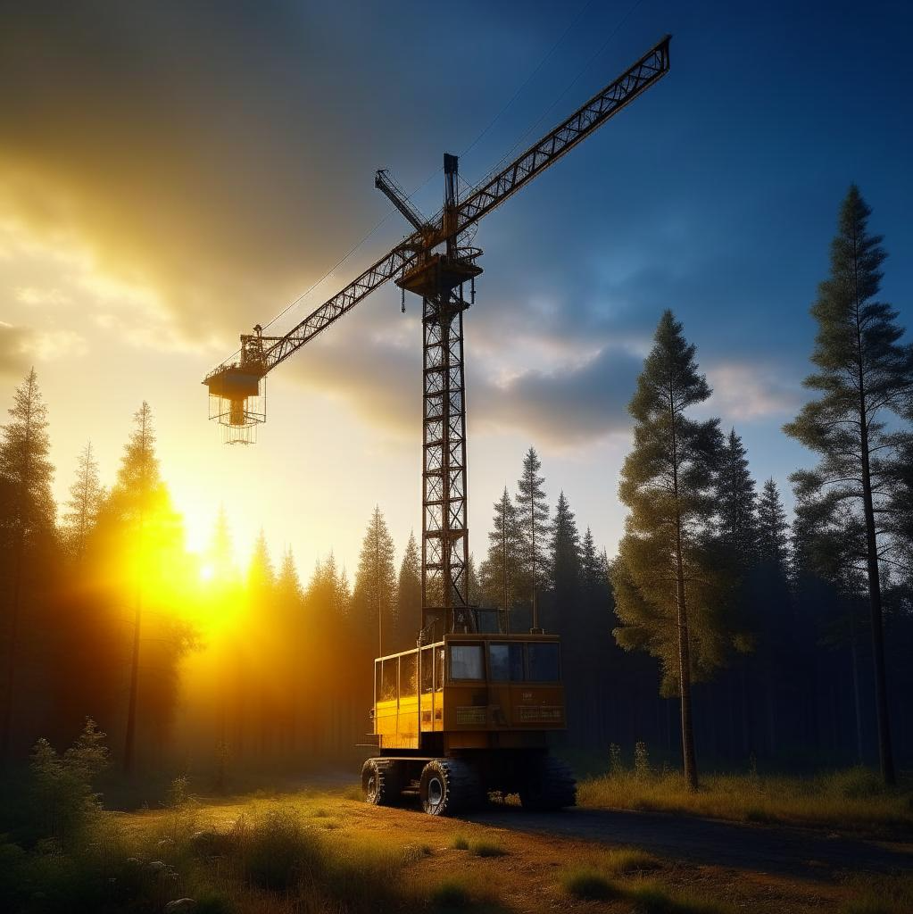
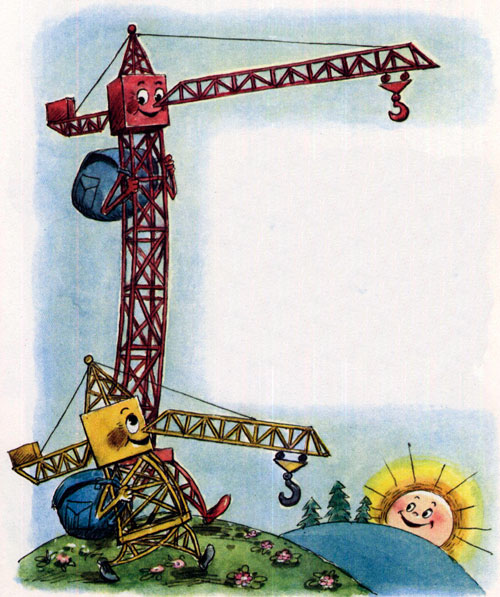
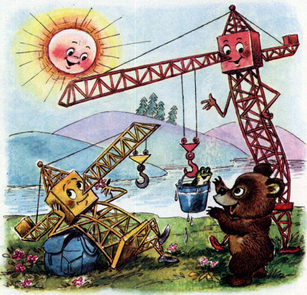
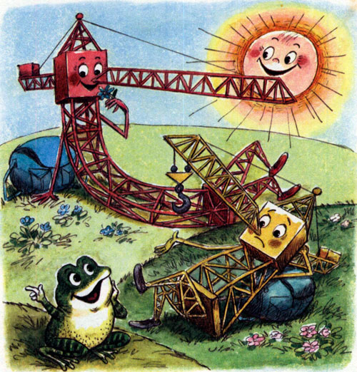
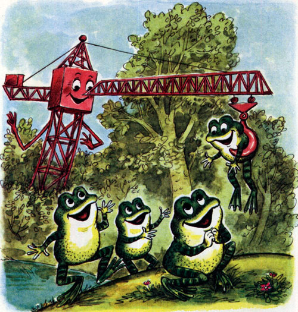
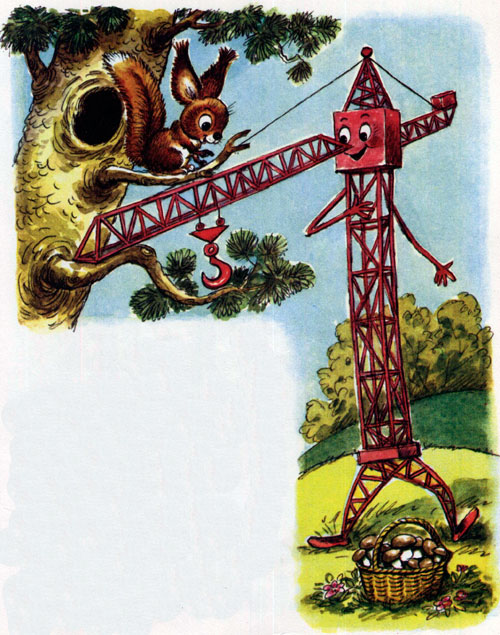
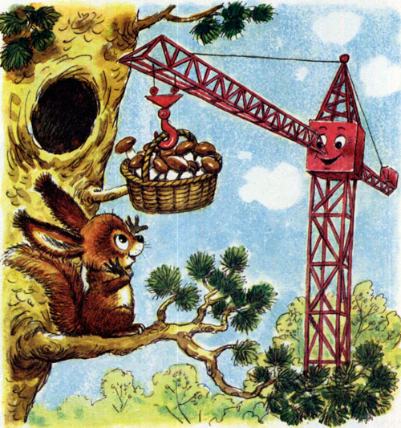
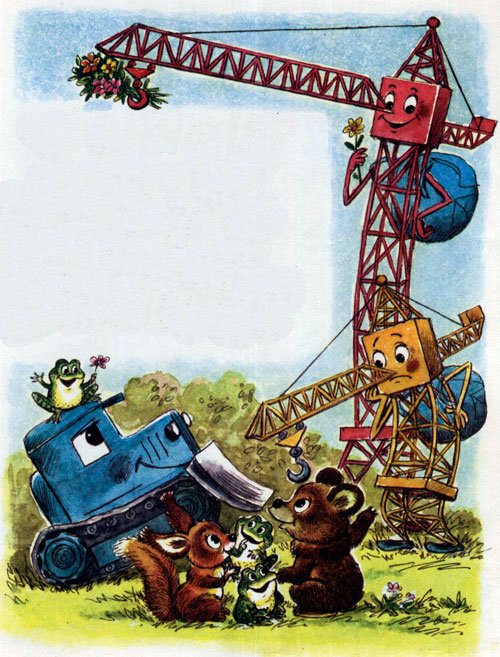
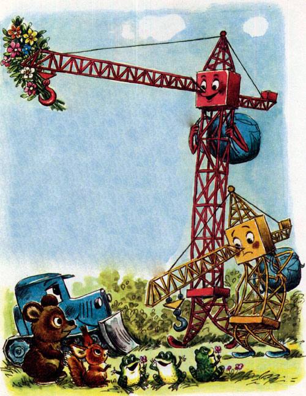
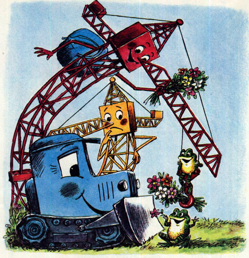

Как отдыхал подъёмный кран
Геннадий Цыферов
Целую неделю работали на стройке два подъёмных крана. А когда настал выходной день, решили они поехать за город — за высокий холм, за голубую речку, за зелёную поляну — отдохнуть.

И только расположились подъёмные краны на мягкой траве среди душистых цветов, как притопал на поляну маленький медвежонок и жалобно попросил:
— Я уронил в речку моё ведёрко. Пожалуйста, достаньте мне его!
— Ты же видишь, я отдыхаю, — сказал один подъёмный кран.
А другой ответил:
— Ну что ж, ведёрко достать — не стены ставить.

Поднял подъёмный кран ведёрко, отдал медвежонку и подумал: «Теперь и отдохнуть можно». Да не тут-то было.
Прискакал на полянку зелёный лягушонок:
— Уважаемые подъёмные краны, пожалуйста, прошу вас, спасите моего братца! Он прыгал, прыгал — и запрыгнул на деревце. А слезть не может.
— Но я ведь отдыхаю! — ответил лягушонку один кран.
А другой сказал:
— Ну что ж, лягушонка спасти — не груз нести.

И снял с дерева озорного лягушонка.
— Бре-ке-ке-ке! Ква-ква! Какой добрый подъёмный кран! — заквакали благодарные лягушата и пустились наперегонки к болотцу.

— Так ты никогда не отдохнёшь! — заскрипел один подъёмный кран.
— Отдохну! — весело ответил другой и положил свою длинную стрелу на сосновую ветку.
— Ах! — воскликнула рыжая белочка — хозяйка сосны. — Как хорошо, что вы ко мне заглянули! Целое лето я собирала на зиму грибы. А поднять в дупло корзину не могу. Пожалуйста, помогите мне!
— Ну что же, — с готовностью ответил подъёмный кран. — Корзину поднять — не вагон разгружать.

Поднял кран корзинку с грибами и поставил прямо в белочкино дупло.
— Спасибо! Большое спасибо, милый подъёмный кран! Вы мне так помогли!
— Ну что вы! — смущённо ответил подъёмный кран. — Это такие пустяки!

Теперь подъёмный кран мог и отдохнуть. Да только пора было собираться в обратный путь, домой. Наступил вечер.
Провожать подъёмные краны пришли зелёные лягушата, маленький медвежонок и рыжая белочка. Стрелу подъёмного крана украшал букет ярких полевых цветов — подарок лесных зверушек.

— Ну как вы отдохнули? — спросил у подъёмных кранов их друг — бульдозер.
— Я, — ответил один подъёмный кран, — весь день сидел на травке, ничего не делал, но почему-то очень устал. Спина болит, всё скрипит.

— А я отдохнул прекрасно! — сказал другой. И дал понюхать бульдозеру полевые цветы.

— А я и не знал, что ты любишь цветы! — улыбнулся бульдозер.
— А я и сам не знал! — воскликнул добрый кран и рассмеялся.